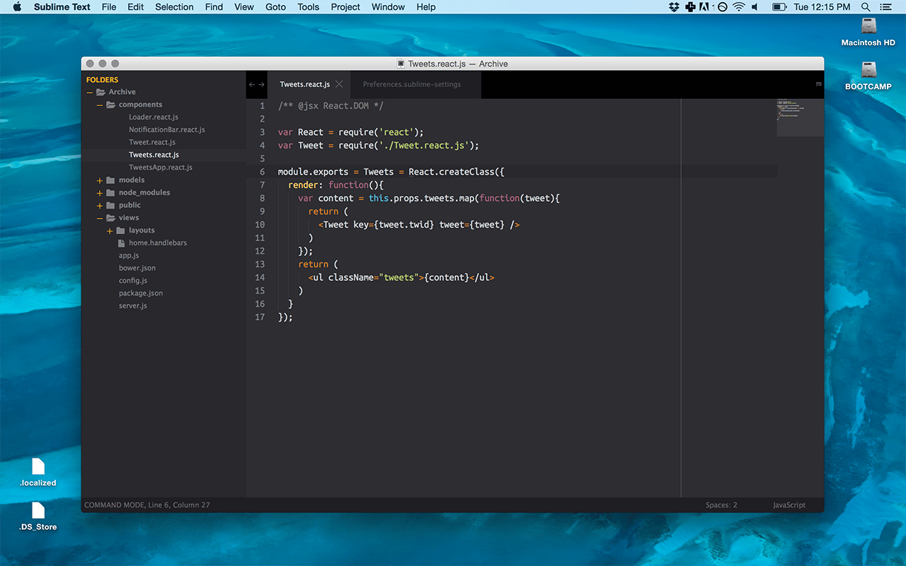

Sublime Text

Sublime Text— кроссплатформенный проприетарный текстовый редактор. Поддерживает плагины на языке программирования Python.
Разработчик позволяет бесплатно и без ограничений ознакомиться с продуктом, однако программа уведомляет о необходимости приобретения лицензии.
Возможности
Некоторые возможности[5]:
Быстрая навигация (Goto Anything)
Командная палитра (Command Palette)
API плагинов на Python
Одновременное редактирование (Split Editing)
Высокая степень настраиваемости (Customize Anything)
Поддержка языков
Sublime Text поддерживает большое количество языков программирования[6] и имеет возможность подсветки синтаксиса для C, C++, C#, CSS, D, Dylan, Erlang, HTML, Groovy, Haskell, Java, JavaScript, LaTeX, Lisp, Lua, Markdown, MATLAB, OCaml, Perl, PHP, Python, R, Ruby, SQL, TCL и XML.
В дополнение к тем языкам программирования, которые включены по умолчанию, пользователи имеют возможность загружать плагины для поддержки других языков.
Менеджер пакетов
Sublime Text может быть оснащён менеджером пакетов, который позволяет пользователю находить, устанавливать, обновлять и удалять пакеты без перезагрузки программы. Менеджер поддерживает установленные пакеты в актуальном состоянии, загружая новые версии из репозиториев. Кроме того, он предоставляет команды для активации и деактивации установленных пакетов.
Некоторые особенности программы
Интерфейс
Редактор содержит различные визуальные темы, с возможностью загрузки дополнительных.
Пользователи видят весь свой код в правой части экрана в виде мини-карты, при клике на которую можно осуществлять навигацию.
Есть несколько режимов экрана. Один из них включает от 1 до 4 панелей, с помощью которых можно показывать до четырёх файлов одновременно. Полноценный (free modes) режим показывает только один файл без каких-либо дополнительных вокруг него меню[6].
Выделение столбцов и множественная правка
Выделение столбцов целиком или расстановка несколько указателей по тексту, что делает возможным мгновенную правку. Указатели ведут себя, будто каждый из них — единственнен в тексте. Команды типа: перемещение на знак, перемещение на строку, выборка текста, перемещение на слово или его части (CamelCase, разделённый дефисом или подчёркиванием), перемещение в начало/конец строки и т. д., влияет на все указатели независимо и сразу, позволяя править сложноструктурированный текст быстро, без использования макрокоманд или регулярных выражений.
Автодополнение
Когда пользователь набирает код, Sublime Text, в зависимости от используемого языка, будет предлагать различные варианты для завершения записи. Редактор также автоматически завершает созданные пользователем переменные.
Подсветка синтаксиса и высокая контрастность
Тёмный фон Sublime Text предназначен для увеличения контрастности текста. Основные элементы синтаксиса выделены разными цветами, которые лучше сочетаются с тёмным фоном, нежели со светлым.
Поддержка систем сборки
Sublime Text позволяет пользователю собирать программы и запускать их без необходимости переключаться на командную строку. Пользователь также может настроить свою систему сборки и включить автоматическую сборку программы каждый раз при сохранении кода.
Заготовки (сниппеты)
Сохранение фрагментов часто используемого кода, ключевые слова для их запуска.
Переход по файлам
Навигационный инструмент, который позволяет пользователям перемещаться между файлами, а также внутри них, с помощью нечёткого поиска.
Другие особенности
Дополнительно реализована функция автосохранения, помогающая пользователям не потерять проделанную работу.
Настраиваемые комбинации клавиш и инструмент навигации позволяют назначать свои комбинации клавиш для меню и панелей инструментов (только для первой версии, во второй и третьей — Command Palette).
Возможность поиска по мере набора используется для поиска в документе.
Функция проверки синтаксиса работает подобным же образом, проверяя корректность прямо во время ввода.
Есть возможность автоматизации с помощью макросов и повтора последних действий.
Команды редактирования, включая редактирование отступов, переформатирование параграфов и объединение строк.
Особенности Sublime text 3
Бета-версия Sublime Text 3 вышла 29 января 2013 года и была доступна только для зарегистрированных пользователей[19], которые купили Sublime Text 2. Однако после релиза 3047, Sublime Text 3 стал доступен всем[20].
Однако dev-версия доступна только зарегистрированным участникам[21].
Также для загрузки стали доступны deb-пакеты для GNU/Linux-дистрибутивов. Ранее же были доступны только tar-архивы.
Изменения в новой версии[22][23]:
увеличение скорости запуска программы;
улучшения в интерфейсе, в поиске, редактировании HTML-файлов;
использование Python 3 для плагинов;
индексирование файлов для поиска объявления переменной, функции или класса как в современных IDE;
улучшение производительности функции «заменить всё»;
перемещение плагинов в отдельный процесс для предотвращения задержек загрузки и краха Sublime Text;
переход к предыдущим позициям курсора.